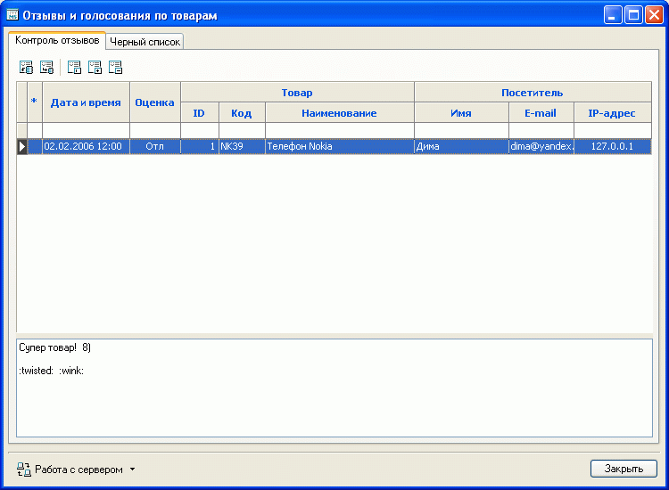
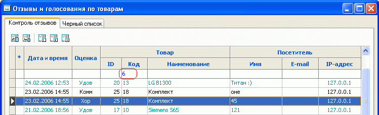
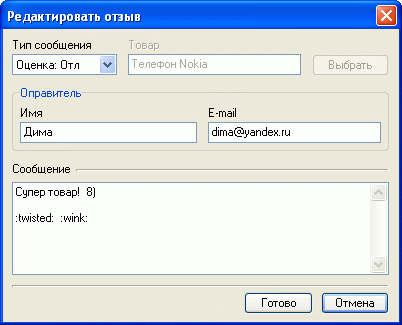
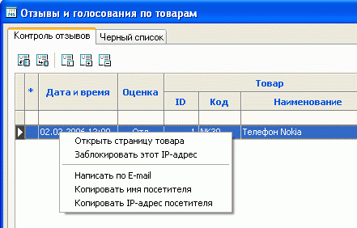
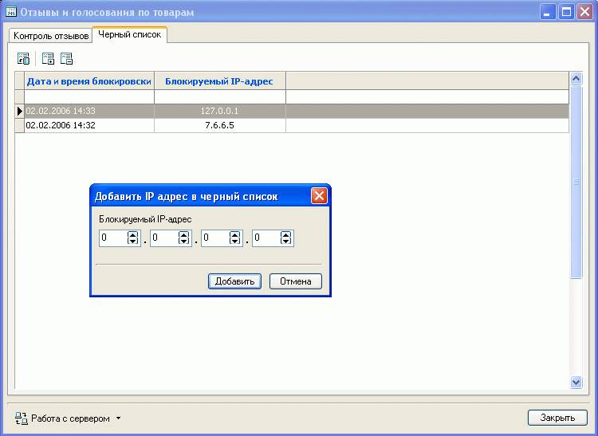
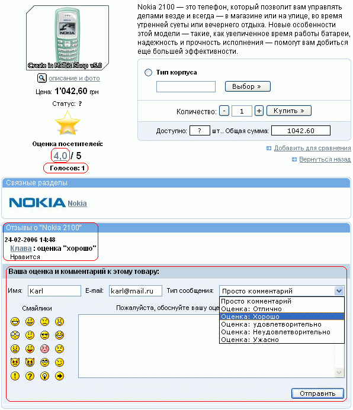

Зачастую мнения покупателей о товаре действуют на новых покупателей более убедительно, чем рекомендации владельцев магазина. Дать возможность покупателям высказать свое мнение, оценить товар позволяет система отзывов и голосования.
Возможность подключения системы отзывов и голосований, а также защита от спама задается на закладке "Страница товара" общих настроек магазина.
Вызовом из главного окна "Товары - Отзывы и голосования по товарам" на закладке "Контроль отзывов" возможен просмотр - редактирование - удаление отзывов. Поскольку сведения о отзывах и голосованиях хранятся на сервере, в первую очередь окно содержит кнопку "Запросить отзывы". Для передачи произведенных изменений служит кнопка "Передать изменения на сервер".

При просмотре и анализе отзывов и голосований по товарам возможна фильтрация записей по различным критериям, для чего в соответствующей колонке в белое поле под шапкой таблицы необходимо ввести условие фильтра в виде одного из знаков "<" (меньше), ">" (больше), "<>" (не равно) или "=" (равно) и требуемое значение (примечание знак "=" можно не вводить, а сразу вводить значение фильтра)
Следует иметь ввиду, что для первых двух колонок задание фильтра имеет некоторые особенности. Так для колонки "Дата и время" условия не могут быть указаны как "равно", а только как "до" или "после", например, ">23.11.2005" что связано с присутствием в этой колонке еще и времени. Для колонки "Оценка" условия задаются по коду оценки: 0 - "Просто комментарий", 1 - "Ужасно", 2 - "Неудовлетворительно", 3 - "Удовлетворительно", 4- "Хорошо", 5- "Отлично". После ввода условия следует нажать на клавиатуре клавишу "Enter". Например для просмотра только комментариев по товару с кодом 6 необходимо в колонке "Код" ввести "=6" или просто "6" и нажать на клавиатуре клавишу "Enter":

Возможно задание условий фильтра по нескольким критериям.
Для снятия условия фильтрации необходимо выделить условие фильтра (дважды кликнув на соответствующей ячейке левой кнопкой мыши), затем нажать на клавиатуре клавиши "Delete" и "Enter".
Кликнув левой кнопкой на интересующем отзыве, можно его отредактировать:

А кликнув правой кнопкой - выполнить с этим отзывом ряд операций:

Закладка "Черный список" позволяет просмотреть список заблокированных IP-адресов, добавить новые, разблокировать введенные. Для просмотра необходимо обновить данные с сервера, нажав соответствующую кнопку. Здесь также возможна фильтрация записей при вводе условия фильтра в белом поле под шапкой таблицы.

В свою очередь, для покупателя на странице товара под изображением товара, ценой и статусом в графическо-цифровом виде отображается среднее значение оценок посетителей, количество проголосовавших, существующие отзывы на товар и поле для указания новой оценки или написания своего коментария к товару посетителем:
